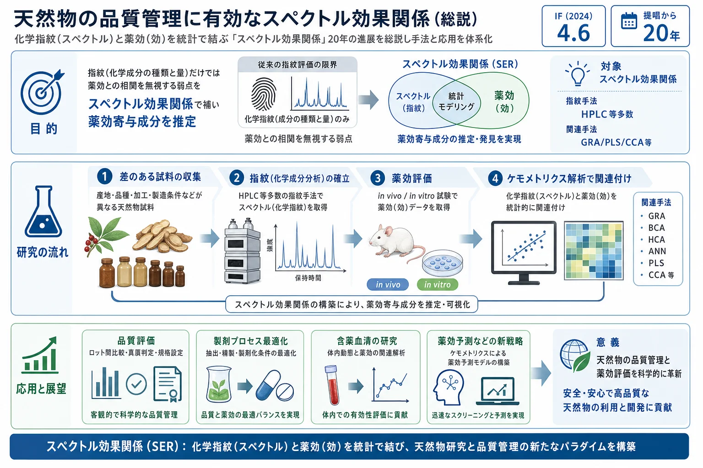

天然物の品質管理に有効なスペクトル効果関係（総説）

<!-- 方針: ほぼ全訳＋必要に応じた補足。原文構成に沿って訳出。文献番号は原文参照。「> 補足:」は訳者注。 -->
書誌情報
- 原題: Spectrum–Effect Relationships as an Effective Approach for Quality Control of Natural Products: A Review
- 著者: Peiyu He, Chunling Zhang, Yaosong Yang, Shuang Tang, Xixian Liu, Jin Yong, Teng Peng（成都中医薬大学 薬学院, 中国）
- 掲載: Molecules 2023, 28(20), 7011. https://doi.org/10.3390/molecules28207011（オープンアクセス, CC BY）
- インパクトファクター: 4.6（Molecules, JCR 2024 / Clarivate）
補足: スペクトル効果関係(spectrum–effect relationships, 譜効関係) = 漢方(TCM)の化学指紋（スペクトル)と薬効（効)を、ケモメトリクス（多変量統計)で相関させ、「どの成分が薬効に効くか(薬効物質基盤)」を推定する研究枠組み。2003年頃に提唱され、本総説はその20周年の総括。GRA=灰色関連度分析、BCA=二変量相関分析、HCA=階層クラスタリング、ANN=人工ニューラルネットワーク、PLS/OPLS=(直交)部分最小二乗、CCA=正準相関分析、PCA=主成分分析。本論文は方法論レビュー。
要旨（Abstract）
生物活性をもつ天然物として、漢方(TCM)の品質は臨床応用の鍵。TCMの化学成分の種類・含量に基づく指紋は国際的に認知された品質評価法だが、化学成分と薬効の相関を無視する。ケモメトリクスにより、TCMの化学成分で表される指紋を薬効活性の結果と相関させてスペクトル効果関係を得ると、薬効に関連する薬効成分情報を明らかにでき、TCMにおける「化学成分研究と薬効研究の分断」という限界を解決できる。スペクトル効果関係の提唱20周年にあたり、本稿はTCM領域での研究進展——指紋の確立、薬効評価法、ケモメトリクス手法、およびTCM領域での実際の応用——をレビューする。さらに近年の新戦略と応用展望も論じる。
1. 序論（Introduction）
TCMは多成分・多標的で作用し、単一成分の含量管理では品質を十分に保証できない。指紋は全体像を捉えるが薬効との結びつきを欠く。スペクトル効果関係は、指紋(化学)と薬効(効)を統計的に橋渡しし、薬効物質基盤の解明・品質評価・プロセス最適化に用いられてきた。過去20年で、TCMの品質評価・製剤プロセス最適化・薬効成分探索に広く適用されている。
2. スペクトル効果関係の研究プロセス
研究は「①差のある試料 → ②指紋の確立 → ③薬効評価 → ④ケモメトリクスによる関連付け」の流れで進む。
2.1 差のある試料（Samples with Differences）
産地・基原・加工(炮製)・採取時期・部位などが異なる試料を用意し、化学組成と薬効に差を持たせることが前提。差があるほど、指紋と薬効の相関が抽出しやすい。
2.2 指紋の確立（Establishment of Fingerprints）
指紋技術には、液体クロマトグラフィー(HPLC/UHPLC)、ガスクロマトグラフィー(GC)、キャピラリー電気泳動(CE)、薄層クロマトグラフィー(TLC)、紫外(UV)・赤外(IR)分光などがある。中でもクロマトグラフィーが主流で、高分離・高感度のHPLCが最も一般的。目的成分の性質（揮発性・極性・熱安定性)に応じて手法を選ぶ（例: 揮発性成分はGC、広極性はLC)。
2.3 薬効に基づく評価（Evaluation Based on Pharmacodynamics）
薬効評価は in vivo（動物モデル・in vitro臓器) で直感的な効果を、細胞培養・生化学実験で機構を観察する。in vivoモデルは、ヒト病態に近い利点がある一方、高コスト・長時間・モデル構築の難しさが欠点。適切な薬効指標(表現型・バイオマーカー・酵素活性等)の選択が、良いスペクトル効果関係の前提になる。
2.4 ケモメトリクスによる関連付け（Association Based on Chemometric Methods）
指紋(ピーク面積等)と薬効指標を統計的に結びつける（Table 2にまとめ)。主な手法:
- 灰色関連度分析(GRA): 各ピークと薬効の関連度を算出。関連の方向(正/負)は示せないが、全ピークを横断的にスクリーニングできる。
- 二変量相関分析(BCA): Pearson等の相関係数で各成分と薬効の相関を評価。
- 階層クラスタリング(HCA)・主成分分析(PCA): 試料の分類・次元圧縮。
- 人工ニューラルネットワーク(ANN)・ランダムフォレスト: 非線形の成分–薬効関係のモデル化。
- (直交)部分最小二乗(PLS/OPLS): 多重共線性のある指紋データで薬効を回帰・判別（VIPで寄与成分を抽出)。
- 正準相関分析(CCA): 指紋の変数群と薬効の変数群の間の相関構造を解析。
これらは「①各成分と薬効の相関を予測する方法、②…、③…」の3カテゴリにも整理できる（原文Table 2)。複数手法を併用して結果を相互検証するのが定石（例: GRAの関連度をOPLS-DAのVIPで裏づける)。
3. TCM領域での応用
3.1 品質評価（Quality Evaluation）
産地・基原・加工の異なる試料の指紋と薬効を結び、薬効連動のQ-markerを選定して品質規格に反映する（例: Farfarae Flos〈款冬花〉の生・炮製品をUPLCで比較し、鎮咳・抗炎症活性と成分を関連付け、炮製後にのみ現れる活性を示した、など)。
3.2 製剤プロセスの最適化（Pharmaceutical Process Optimization）
抽出・炮製・製剤化などの工程条件を、化学指紋と薬効の両方を指標に最適化する（＝“成分が保たれる”だけでなく“薬効が保たれる”条件を選ぶ)。
3.3 含薬血清の探索（Drug-Containing Serum）
経口投与後の血清（＝実際に吸収・代謝された成分を含む)の指紋と薬効を結び、生体内で本当に効いている成分を絞り込む（血清薬理学とスペクトル効果関係の融合)。
4. 新戦略と展望
4.3 ケモメトリクスによる薬効予測
近年は、確立したスペクトル効果モデルを使って、新規試料の薬効を指紋から予測する方向（＝品質評価から予測へ)や、機械学習(ANN・ランダムフォレスト等)による非線形モデル化が進む。これにより、薬効試験を毎回行わずに指紋から薬効を推定できる可能性がある。
5. 結論（Conclusion）
スペクトル効果関係は、提唱20年でTCMの品質評価・製剤プロセス最適化・薬効成分探索に広く使われるようになった。指紋(化学)と薬効(効)の分断を埋め、薬効物質基盤を明らかにする有効な枠組みである。今後は、より適切な薬効指標の選択、非線形・機械学習手法の導入、含薬血清や薬効予測との統合により、さらに実用的なQC手法へ発展すると期待される。
補足（実務的示唆）: 本サイトには個別のスペクトル効果研究（五味清濁丸・ReDuNing注射剤・三化湯など)が複数収録されているが、本総説はそれらの方法論の“地図”にあたる。実務の要点は——①差のある試料を意図的に集める（産地・基原・炮製・部位が均一だと相関が出ない)。②指紋は目的成分の性質でHPLC/GC/分光を選ぶ。③薬効は同一バッチで測る（in vivo/in vitro/細胞)。④関連付けは単一手法に頼らずGRA(全ピーク横断)＋PLS/OPLS(VIPで寄与抽出)＋相関分析を併用し相互検証する。⑤GRAは方向(正負)を示せないなどの各手法の限界を理解して使う。⑥“含薬血清”や“薬効予測”まで進めると、規格成分を薬効に一段近づけられる。生薬QCで「規格成分＝薬効成分」を目指す際の設計指針として通読価値が高い。
参考文献
- She, Y.M.; Hu, Y.H.; Han, L.Y.; Liu, S.X.; Chen, C.Q. Research progress on quality control of Chinese materia medica. Chin. Tradit. Herb. Drugs 2017, 48, 2557–2563.
- Liu, D.F.; Zhao, L.N.; Li, Y.F.; Jin, C.D. Research progress and application in fingerprint technology on Chinese materia medica. Chin. Tradit. Herb. Drugs 2016, 47, 4085–4094.
- Han, C.; Wang, S.; Li, Z.; Chen, C.; Hou, J.; Xu, D.; Wang, R.; Lin, Y.; Luo, J.; Kong, L. Bioactivity-guided cut countercurrent chromatography for isolation of lysine-specific demethylase 1 inhibitors from Scutellaria baicalensis Georgi. Anal. Chim. Acta 2018, 1016, 59–68. [CrossRef]
- Ye, Y.; Li, X.Q.; Tang, P.C.; Yao, S. Natural products chemistry research: Progress in China in
- Li, D.Q.; Zhao, J.; Wu, D.; Li, S.P. Discovery of active components in herbs using chromatographic separation coupled with online bioassay. J. Chromatogr. B 2016, 1021, 81–90.
- Lu, Y.; Wu, N.; Fang, Y.; Shaheen, N.; Wei, Y. An automatic on-line 2,2-diphenyl-1-picrylhydrazyl-high performance liquid chromatography method for high-throughput screening of antioxidants from natural products. J. Chromatogr. A 2017, 1521, 100–109. [CrossRef] [PubMed]
- Li, R.; Yan, Z.Y.; Li, W.J.; Xu, T.; Tan, R.A.; Pan, L.; Li, Y.M.; Ma, Y.L. The establishment of chromatographic pharmacodynamics. Educ. Chin. Med. 2002, 21,
- Xu, G.L.; Xie, M.; Yang, X.Y.; Song, Y.; Yan, C.; Yang, Y.; Zhang, X.; Liu, Z.Z.; Tian, Y.X.; Wang, Y.; et al. Spectrum-effect relationships as a systematic approach to traditional Chinese medicine research: Current status and future perspectives. Molecules 2014, 19, 17897–17925. [CrossRef]
- Zhu, C.S.; Lin, Z.J.; Xiao, M.L.; Niu, H.J.; Zhang, B. The spectrum-effect relationship—A rational approach to screening effective compounds, reflecting the internal quality of Chinese herbal medicine. Chin. J. Nat. Med. 2016, 14, 177–184. [CrossRef]
- Zhang, C.; Zheng, X.; Ni, H.; Li, P.; Li, H.J. Discovery of quality control markers from traditional Chinese medicines by fingerprint-efficacy modeling: Current status and future perspectives. J. Pharm. Biomed. Anal. 2018, 159, 296–304. [CrossRef]
- Tian, W.; Yang, J.; Dou, J.H.; Li, X.M.; Dai, X.F.; Wang, X.M.; Sun, Y.H.; Li, Z.Y. Interbatch quality control of the extract from Artemisia frigida Willd. by spectrum-effect relationship between HPLC fingerprints and the total antioxidant capacity. Int. J. Food Prop. 2022, 25, 541–549. [CrossRef]
- Yu, M.Q.; Xu, G.; Qin, M.; Li, Y.L.; Guo, Y.Y.; Ma, Q. Multiple fingerprints and spectrum-effect relationship of polysaccharides from Saposhnikoviae Radix. Molecules 2022, 27,
- Zeng, L.J.; Lin, B.; Song, H.T. Progress in study of spectrum-effect relationship of traditional Chinese medicine and discussions. China J. Chin. Mater. Medica 2015, 40, 1425–1432.
- Liu, M.Y.; Luo, Z.H.; Chen, Z.E.; Qin, Y.R.; Liu, Q.Y.; Ding, P. Quality markers for processed products of Morinda officinalis how based on the “oligosaccharides-spectrum-effect”. J. Pharm. Biomed. Anal. 2022, 208,
- Zhang, J.; Chen, T.; Li, K.; Xu, H.; Liang, R.; Wang, W.; Li, H.; Shao, A.; Yang, B. Screening active ingredients of rosemary based on spectrum-effect relationships between UPLC fingerprint and vasorelaxant activity using three chemometrics. J. Chromatogr. B 2019, 1134–1135,
- Lan, L.; Zhang, J.; Yang, T.; Gong, D.; Zheng, Z.; Sun, G.; Guo, P.; Zhang, H. Compound synthesizing profiling based on quantitative HPLC fingerprints combined with antioxidant activity analysis for Zhizi Jinhua pills. Phytomedicine 2022, 105,
- Xu, N.; Li, M.C.; Wang, P.; Wang, S.L.; Shi, H.Y. Spectrum-effect relationship between antioxidant and anti-inflammatory effects of Banxia Baizhu Tianma Decoction: An identification method of active substances with endothelial cell protective effect. Front. Pharmacol. 2022, 13,
- Gong, D.D.; Chen, J.Y.; Sun, Y.; Liu, X.T.; Sun, G.X. Multiple wavelengths maximization fusion fingerprint profiling for quality evaluation of compound liquorice tablets and related antioxidant activity analysis. Microchem. J. 2021, 160,
- Liu, X.Y.; Zhang, H.; Su, M.; Sun, Y.; Liu, H.M.; Zang, H.C.; Nie, L. Comprehensive quality evaluation strategy based on non-targeted, targeted and bioactive analyses for traditional Chinese medicine: Tianmeng oral liquid as a case study. J. Chromatogr. A 2020, 1620,
- Wang, X.J. Study on serum pharmacochemistry of traditional Chinese medicine. World Sci. Technol. Mod. Trad. Chin. Med. 2002, 4, 1–4.
- Liu, X.; Wang, X.L.; Zhu, T.T.; Zhu, H.; Zhu, X.C.; Cai, H.; Cao, G.; Xu, X.Y.; Niu, M.J.; Cai, B.C. Study on spectrum-effect correlation for screening the effective components in Fangji Huangqi Tang basing on ultra-high performance liquid chromatography-mass spectrometry. Phytomedicine 2018, 47, 81–92. [CrossRef] [PubMed] Molecules 2023, 28, 7011 22 of 26
- Wang, Y.L.; Liu, W.; Yang, D.B.; Qing, Y.J.; Du, P.; Jin, Y.; Yao, X.Y. Establishment of fingerprint of Gegen Qinlian decoction and its formula compatibility groups using UHPLC–MS/MS and its study to spectrum–effect relationship. J. Liq. Chromatogr. Relat. Technol. 2017, 41, 384–390. [CrossRef]
- Yu, Y.T.; Zhu, Z.Y.; Xie, M.J.; Deng, L.P.; Xie, X.J.; Zhang, M. Investigation on the Q-markers of Bushen Huoxue Prescriptions for DR treatment based on chemometric methods and spectrum-effect relationship. J. Ethnopharmacol. 2022, 285,
- Zhang, D.D.; Fan, L.D.; Yang, N.; Li, Z.L.; Sun, Z.M.; Jiang, S.Y.; Luo, X.Y.; Li, H.J.; Wei, Q.; Ye, X.C. Discovering the main “reinforce kidney to strengthening Yang” active components of salt Morinda officinalis based on the spectrum-effect relationship combined with chemometric methods. J. Pharm. Biomed. Anal. 2022, 207,
- Deng, R.R. A Preliminary Study on the Identification of Lavender Essential Oil and Its Spectral Effect Relationship. Master’s Thesis, Guangdong Pharmaceutical University, Guangzhou, China,
- Luo, H.; Bian, H.; Han, Y.Q.; Zhang, J.R.; Xia, L.Z.; Zhu, X.W. Investigation on spectrum -activity relationship between extracts from pericarpium citri reticulatae and its pharmacological action. J. Shanxi Univ. Chin. Med. 2016, 17, 22–25.
- Hou, Z.F.; Sun, G.X.; Guo, Y.; Yang, F.L.; Gong, D.D. Capillary electrophoresis fingerprints combined with linear quantitative profiling method to monitor the quality consistency and predict the antioxidant activity of Alkaloids of Sophora flavescens. J. Chromatogr. B 2019, 1133,
- Zhang, Y.J.; Yang, L.P.; Zhang, J.; Shi, M.; Sun, G.X. Micellar electrokinetic capillary chromatography fingerprints combined with multivariate statistical analyses to evaluate the quality consistency and predict the fingerprint-efficacy relationship of Salviae miltiorrhizae Radix et Rhizoma (Danshen). J. Sep. Sci. 2017, 40, 2800–2809. [CrossRef]
- Hang, N.T.; Hoang, L.V.; Phuong, N.V. Spectrum-effect relationship between high-performance thin-layer chromatography data and xanthine oxidase inhibitory activity of celery seed extract. Biomed. Chromatogr. 2021, 35, e5181.
- Shawky, E.; Ibrahim, R.S. Bioprofiling for the quality control of Egyptian propolis using an integrated NIR-HPTLC-image analysis strategy. J. Chromatogr. B 2018, 1095, 75–86. [CrossRef]
- Ibrahim, R.S.; Khairy, A.; Zaatout, H.H.; Hammoda, H.M.; Metwally, A.M.; Salman, A.M. Chemometric evaluation of alfalfa sprouting impact on its metabolic profile using HPTLC fingerprint-efficacy relationship analysis modelled with partial least squares regression. J. Pharm. Biomed. Anal. 2020, 179,
- Ni, L.J.; Zhang, L.G.; Hou, J.; Shi, W.Z.; Guo, M.L. A strategy for evaluating antipyretic efficacy of Chinese herbal medicines based on UV spectra fingerprints. J. Ethnopharmacol. 2009, 124, 79–86. [CrossRef] [PubMed]
- Dong, Y.T.; Pei, F.; Su, A.X.; Sanidad, K.Z.; Ma, G.X.; Zhao, L.Y.; Hu, Q.H. Multiple fingerprint and fingerprint-activity relationship for quality assessment of polysaccharides from Flammulina velutipes. Food. Chem. Toxicol. 2020, 135,
- Chang, Y.Q.; Zhang, D.; Yang, G.Y.; Zheng, Y.G.; Guo, L. Screening of anti-lipase components of Artemisia argyi leaves based on spectrum-effect relationships and HPLC-MS/MS. Front. Pharmacol. 2021, 12,
- Chen, C.H.; Chen, J.L.; Shi, J.J.; Chen, S.Y.; Zhao, H.; Yan, Y.; Jiang, Y.C.; Gu, L.; Chen, F.Y.; Liu, X.H. A strategy for quality evaluation of salt-treated Apocyni Veneti Folium and discovery of efficacy-associated markers by fingerprint-activity relationship modeling. Sci. Rep. 2019, 9,
- Tan, L.; Yang, Y.F.; Peng, J.; Zhang, Y.; Wu, B.; He, B.S.; Jia, Y.; Yan, T.X. Schisandra chinensis (Turcz.) Baill. essential oil exhibits antidepressant-like effects and against brain oxidative stress through Nrf2/HO-1 pathway activation. Metab. Brain Dis. 2022, 37, 2261–2275. [CrossRef]
- Bai, X.; Liu, L.; Zhang, J.P.; Chen, L.; Wu, T.; Aisa, H.A.; Maiwulanjiang, M. Spectrum-effect relationship between GC-QTOF-MS fingerprint and antioxidant, anti-inflammatory activities of Schizonepeta tenuifolia essential oil. Biomed. Chromatogr. 2021, 35, e5106. [CrossRef]
- Wang, D.; Hou, J.; Wu, Y.; Gao, Q.Q.; Chen, Z.P.; Li, W.D. Spectrum-effect relationships of the metal elements in pyritum, its processed products and their activities on proliferation of osteoblasts. Tradit. Chin. Drug Res. Clin. Pharmacol. 2021, 32, 1109–1113.
- Chen, X.H.; Cui, L.L.; Bao, Y.R.; Meng, X.S. Spectra-effect relationship of anti-tumor effects of Saltpeter in different regions based on gray correlation analysis. J. Liaoning. Univ. Tradit. Chin. Med. 2019, 21, 61–65.
- Wu, R.J.; Liang, J.; Liang, Y.H.; Xiong, L. A spectrum-effect based method for screening antibacterial constituents in Niuhuang Shangqing Pill using comprehensive two-dimensional liquid chromatography. J. Chromatogr. B 2022, 1191,
- Li, Y.F.; Cheng, Y.Y.; Fan, X.H. A Strategy for multidimensional spectrum-effect relationship of traditional Chinese medicine. Chin. J. Nat. Med. 2010, 8, 167–170. [CrossRef]
- Yang, L.P.; Xie, X.M.; Yang, L.; Zhang, J.; Sun, G.X. Monitoring quality consistency of Ixeris sonchifolia (Bunge) Hance injection by integrating UV spectroscopic fingerprints, a multi-wavelength fusion fingerprint method, antioxidant activities and UHPLC/QTOF-MS. RSC Adv. 2016, 6, 87616–87627. [CrossRef]
- Tistaert, C.; Dejaegher, B.; Vander Heyden, Y. Chromatographic separation techniques and data handling methods for herbal fingerprints: A review. Anal. Chim. Acta 2011, 690, 148–161. [PubMed]
- Goodarzi, M.; Russell, P.J.; Heyden, Y.V. Similarity analyses of chromatographic herbal fingerprints: A review. Anal. Chim. Acta 2013, 804, 16–28. [CrossRef] [PubMed]
- Xu, B.X.; Gao, J.; Zhao, S.N.; Li, Y.R.; Du, Y.L.; Pan, H.F. The Spectrum–effect relationship between HPLC fingerprint and the invigorating blood and dissolving stasis effect of Hawthorn Leaves. Chromatographia 2020, 83, 409–421. [CrossRef] Molecules 2023, 28, 7011 23 of 26
- Du, W.F.; Zhu, W.H.; Ge, W.H.; Li, C.Y. Research on the effect of spleen-invigorating and anti-swelling active ingredients in crude and processed coix seed based on Spectrum-Effects relationship combined with chemometrics. J. Pharm. Biomed. Anal. 2021, 205,
- Yang, J.; Tian, W.; Liu, Y.F.; Li, X.M.; Pan, F.F.; Wang, Z.Y.; Li, Z.Y.; Yang, P.L.; Dai, X.F. Quality evaluation of the extract of aerial parts from Atractylodes lancea based on fingerprint and chemometrics. Int. J. Food Prop. 2022, 25, 422–434. [CrossRef]
- Liu, X.K.; Wang, Y.; Ge, W.; Cai, G.Z.; Guo, Y.L.; Gong, J. Spectrum-effect relationship between ultra-high-performance liquid chromatography fingerprints and antioxidant activities of Lophatherum gracile Brongn. Food Sci. Nutr. 2022, 10, 1592–1601. [CrossRef]
- Wang, D.; Gao, S.; Mu, Y.Y.; Zhu, F.F.; Li, W.L. Application of serum pharmacology studying on spectral effect relationship of traditional Chinese medicine. J. Harbin Univ. Commer. (Nat. Sci. Ed.) 2013, 29, 641–644.
- Sun, L.Q.; Qi, J.; Yu, B.Y. Advances of multi-dimensional spectrum-effect relationship for the research on traditional Chinese medicine. J. China Pharm. Univ. 2013, 44, 487–493.
- Lv, S.W.; Dong, S.Y.; Guo, Y.Y.; Sun, S.; Kuang, H.X. Advance in application of data analysis technique in spectrum-effect relationship of traditional Chinese medicines. Chin. J. Exp. Tradit. Med. Formulae 2015, 21, 226–230.
- Tan, X.R.; Deng, J.L. Grey relational analysis: Multiariable statistical analysis methods. Stat. Res. 1995, 65, 46–48.
- Li, X.; Zhang, F.; Wang, X.; Sun, G.X. Evaluating the quality consistency of Rong’e Yishen oral liquid by UV + FTIR quantum profilings and HPLC fingerprints combined with 3-dimensional antioxidant profiles. Microchem. J. 2021, 170,
- Rencher, A. Methods of Multivariate Analysis, 2nd ed.; John Wiley & Sons, Inc.: Hoboken, NJ, USA,
- Huang, M.W.; Li, R.J.; Yang, M.; Zhou, A.; Wu, H.; Li, Z.G.; Wu, H. Discovering the potential active ingredients of Qi-Yu-San-Long decoction for anti-oxidation, inhibition of non-small cell lung cancer based on the spectrum-effect relationship combined with chemometric methods. Front. Pharmacol. 2022, 13,
- Jiang, X.S.; Tao, L.C.; Li, C.G.; You, M.M.; Li, G.Q.; Zhang, C.P.; Hu, F.L. Grouping, Spectrum-effect relationship and antioxidant compounds of Chinese Propolis from different regions using multivariate analyses and off-line anti-DPPH assay. Molecules 2020, 25,
- Alsberg, B.K.; Kell, D.B.; Goodacre, R. Variable selection in discriminant partial least squares analysis. Anal. Chem. 1998, 70,
- An, Q.; Wang, L.; Ding, X.Y.; Shen, Y.J.; Hao, S.H.; Li, W.J.; Li, H.Y.; Wang, T.H.; Zhan, Z.L.; Zheng, Y.G.; et al. Validation of Sennae Folium specification grade classification based on UPLC-Q-TOF/MS spectrum-effect relationship. Arab. J. Chem. 2022, 15,
- Wold, H. Partial least squares. Encycl. Stat. Sci. 1985, 6, 581–591.
- Kong, W.J.; Zhao, Y.L.; Shan, L.M.; Xiao, X.H.; Guo, W.Y. Spectrum-effect Relationships between HPLC fingerprints and biothermo-logical activity of Zuojinwan and its similar formulaes. Acta Chim. Sin. 2008, 66, 2533–2538.
- Fan, L.H.; Fan, W.X.; Wei, Z.Q.; Tan, C.Q.; Wu, C.J.; Huang, Y.L. A Rapid near infrared spectroscopy evaluation system for quality management of Chinese medicinal materials based on appearance characteristics. Pharm. Clin. Chin. Mater. Medica 2021, 12, 15–19.
- Li, Q.Y.; Bian, L.H.; Wang, X.M.; Yao, Z.W.; Li, J.Y.; Wan, G.H.; Wei, X.J.; Liu, J.F.; Yu, J.H.; Jin, C.X.; et al. Spectrum-effect relationship of hemostatic effects of Notoginseng Radix et Rhizoma with different commodity specifications. China J. Chin. Mater. Medica 2021, 46, 4157–4166.
- Liu, Y.; Guo, H.Q.; Yang, L.; Cheng, Y.R.; Shi, X.J.; Yang, L.; Gong, Y.T.; Dong, L. Study on anti-inflammatory activities in vitro and in vivo and relation of fingerprint with pharmacodynamics of Notopterygii Rhizoma et Radix from three commercial specifications. Chin. Tradit. Herb. Drugs 2019, 50, 6052–6058.
- Zhao, L.Y.; Shi, M.Y.; Zhang, Q.Y.; Qin, L.P.; Sun, Y.Q. Research progress on quality characteristics and formation mechanism of genuine medicinal materials. Chin. Tradit. Herb. Drugs 2022, 53, 6931–6947.
- Qi, L.M.; Zhong, F.R.; Liu, N.N.; Wang, J.; Nie, K.D.; Tan, Y.L.; Ma, Y.T.; Xia, L.N. Characterization of the anti-AChE potential and alkaloids in Rhizoma Coptidis from different Coptis species combined with spectrum-effect relationship and molecular docking. Front. Plant Sci. 2022, 13,
- Lu, Y.F.; Li, D.X.; Zhang, R.; Zhao, L.L.; Qiu, Z.; Du, Y.; Ji, S.; Tang, D.Q. Chemical antioxidant quality markers of Chrysanthemum morifolium using a spectrum-effect approach. Front. Pharmacol. 2022, 13,
- Liao, M.; Yan, P.; Liu, X.C.; Du, Z.F.; Jia, S.L.; Aybek, R.; Li, A.Q.; Kaisa, S.; Jiang, H.L. Spectrum-effect relationship for anti-tumor activity of shikonins and shikonofurans in medicinal Zicao by UHPLC-MS/MS and chemometric approaches. J. Chromatogr. B 2020, 1136,
- Chen, Z.Y.; Du, X.; Yang, Y.Y.; Cui, X.M.; Zhang, Z.J.; Li, Y. Comparative study of chemical composition and active components against alpha-glucosidase of various medicinal parts of Morus alba L. Biomed. Chromatogr. 2018, 32, e4328. [CrossRef] [PubMed]
- Yan, H.Y.; Zou, C.C. Study on anticoagulant material basis and mechanism of Trichosanthis Semen and its shell andkernel based on spectrum-effect relationship integrated molecular docking. China J. Chin. Mater. Medica 2022, 47, 1370–1382.
- Qu, C.; Pu, Z.J.; Zhou, G.S.; Wang, J.; Zhu, Z.H.; Yue, S.J.; Li, J.P.; Shang, L.L.; Tang, Y.P.; Shi, X.Q.; et al. Comparative analysis of main bio-active components in the herb pair DanshenHonghua and its single herbs by ultra-high performance liquid chromatography coupled to triple quadrupole tandem mass spectrometry. J. Sep. Sci. 2017, 40, 3392–3401. [CrossRef] Molecules 2023, 28, 7011 24 of 26
- Zhang, P.L.; He, S.R.; Wu, S.Q.; Li, Y.; Wang, H.Y.; Yan, C.Y.; Yang, H.; Li, P. Discovering a multi-component combination against bascular Dementia from Danshen-Honghua herbal pair by spectrum-effect relationship analysis. Pharmaceuticals 2022, 15,
- Wang, Y.L.; Hu, G.; Zhang, Q.; Yang, Y.X.; Li, Q.Q.; Hu, Y.J.; Chen, H.; Yang, F.Q. Screening and Characterizing Tyrosinase Inhibitors from Salvia miltiorrhiza and Carthamus tinctorius by Spectrum-Effect Relationship Analysis and Molecular Docking. J. Anal. Methods Chem. 2018, 2018,
- Wang, Y.L.; Zhang, Q.; Yin, S.J.; Cai, L.; Yang, Y.X.; Liu, W.J.; Hu, Y.J.; Chen, H.; Yang, F.Q. Screening of blood-activating active components from Danshen-Honghua herbal pair by spectrum-effect relationship analysis. Phytomedicine 2019, 54, 149–158. [CrossRef]
- Shi, J.W.; Li, Z.Z.; Wu, J.S.; Jin, W.Y.; Chang, X.Y.; Sun, H.; Dong, L.; Jiang, Z.P.; Shi, Y. Identification of the bioactive components of Banxia Xiexin Decoction that protect against CPT-11-induced intestinal toxicity via UPLC-based spectrum-effect relationship analyses. J. Ethnopharmacol. 2021, 266,
- Zhou, X.W.; Li, Y.; Zhang, M.Y.; Hao, J.J.; Gu, Q.; Liu, H.Y.; Chen, W.; Shi, Y.F.; Dong, B.; Zhang, Y.Y.; et al. Spectrum-effect relationship between UPLC fingerprints and antilung cancer effect of Si Jun Zi Tang. Evid.-Based Complement. Altern. Med. 2019, 2019,
- Tong, J.B.; Gao, Y.T.; Fan, C.L.; Yang, C.; Han, M.X.; Zhang, N.Z. Clinical observation of qiyu sanlong decoction for non-small cell lung cancer in moderate and advanced stages. J. New Chin. Med. 2018, 50, 146–150.
- Pang, H.Q.; Zhou, P.; Meng, X.W.; Yang, H.; Li, Y.; Xing, X.D.; Wang, H.Y.; Yan, F.R.; Li, P.; Gao, W. An image-based fingerprintefficacy screening strategy for uncovering active compounds with interactive effects in Yindan Xinnaotong soft capsule. Phytomedicine 2022, 96,
- Wei, Y.H.; Nie, L.; Gao, L.L.; Zhong, L.; Sun, Z.Y.; Yang, X.C.; Yue, J.N.; Zeng, Y.Z.; Li, L.; Sun, J.; et al. An integrated strategy to identify and quantify the quality markers of Xinkeshu Tablets based on spectrum-effect relationship, network pharmacology, plasma pharmacochemistry, and pharmacodynamics of zebrafish. Front. Pharmacol. 2022, 13,
- Li, X.; Zhang, F.; Shi, Y.N.; Bao, B.C.; Sun, G.X. Assessing the quality consistency of Rong’e Yishen oral liquid by five-wavelength maximization profilings and electrochemical fingerprints combined with antioxidant activity analyses. Anal. Chim. Acta 2022, 1192,
- Qiao, R.F.; Zhou, L.F.; Zhong, M.Y.; Zhang, M.; Yang, L.; Yang, Y.F.; Chen, H.F.; Yang, W.L.; Yuan, J.B. Spectrum-effect relationship between UHPLC-Q-TOF/MS fingerprint and promoting gastrointestinal motility activity of Fructus aurantii based on multivariate statistical analysis. J. Ethnopharmacol. 2021, 279,
- Zhu, J.; Zhong, L.Y.; Ye, X.D.; Gong, Q.F.; Zhang, J.L. Comparison of dryness in different processed products of Aurantii fructus and investigation of their effect on gastrointestinal function in rats with functional dyspepsia. Chin. J. Exp. Tradit. Med. Formulae 2017, 23, 20–26.
- Qiao, R.F.; Zhong, M.Y.; Zhang, M.; Yang, L.; Du, X.Q.; Tuo, F.L.; Yuan, J.B. Dryness comparison of different fractions of Aurantii fructus extract on normal mice and gastrointestinal motility disorder rats and spectrum-dryness study. China J. Chin. Mater. Medica 2021, 46, 5291–5303.
- Li, Y.M.; Yang, Y.F.; Kang, X.D.; Li, X.F.; Wu, Y.Z.; Xiao, J.P.; Ye, Y.; Yang, J.Q.; Yang, Y.; Liu, H. Study on the anti-inflammatory effects of Callicarpa nudiflora based on the spectrum-effect relationship. Front. Pharmacol. 2021, 12,
- Chen, X.Y.; Gou, S.H.; Shi, Z.Q.; Xue, Z.Y.; Feng, S.L. Spectrum-effect relationship between HPLC fingerprints and bioactive components of Radix Hedysari on increasing the peak bone mass of rat. J. Pharm. Anal. 2019, 9, 266–273. [CrossRef] [PubMed]
- Nichitoi, M.M.; Josceanu, A.M.; Isopescu, R.D.; Isopencu, G.O.; Geana, E.I.; Ciucure, C.T.; Lavric, V. Polyphenolics profile effects upon the antioxidant and antimicrobial activity of propolis extracts. Sci. Rep. 2021, 11,
- Yang, H.T.; Li, Q. Optimization of extraction process and the antioxidant activity spectrum-effect relationship of Angelica dahurica. Biomed. Chromatogr. 2022, 36, e5322.
- Ma, Y.; Li, J.; Tong, F.; Xin, X.L.; Aisa, H.A. Optimization of microwave-assisted extraction using response surface methodology and the potential anti-diabetic efficacy of Nigella glandulifera Freyn determined using the spectrum–effect relationship. Ind. Crop. Prod. 2020, 153,
- Wu, X.; Wang, S.P.; Lu, J.R.; Jing, Y.; Li, M.X.; Cao, J.L.; Bian, B.L.; Hu, C.J. Seeing the unseen of Chinese herbal medicine processing (Paozhi): Advances in new perspectives. Chin. Med. 2018, 13,
- Wu, H.S.; Lv, Y.; Wei, F.Y.; Li, C.Y.; Ge, W.H.; Du, W.F. Comparative analysis of anti-osteoporosis efficacy in Radix Dipsaci before and after processing with salt based on spectrum-effect relationship. J. Pharm. Biomed. Anal. 2022, 221,
- Song, Y.F.; Yang, J.B.; Hu, X.W.; Gao, H.Y.; Wang, P.F.; Wang, X.T.; Liu, Y.; Cheng, X.L.; Wei, F.; Ma, S.C. A stepwise strategy integrating metabolomics and pseudotargeted spectrum-effect relationship to elucidate the potential hepatotoxic components in Polygonum multiflorum. Front. Pharmacol. 2022, 13,
- Yang, L.; Jiang, H.; Wang, S.; Hou, A.J.; Man, W.J.; Zhang, J.X.; Guo, X.Y.; Yang, B.Y.; Kuang, H.X.; Wang, Q.H. Discovering the major antitussive, expectorant, and anti-Inflammatory bioactive constituents in Tussilago farfara L. based on the spectrum-effect relationship combined with chemometrics. Molecules 2020, 25,
- Ma, D.D.; Wang, J.; Yin, G.; Wang, L.J.; Jin, Y.B.; Huang, Y.; Bi, K.S.; Lu, Y.; Wang, T.J. The Study of steaming durations and temperatures on the chemical characterization, neuroprotective, and antioxidant activities of Panax notoginseng. Evid.-Based Complement. Altern. Med. 2022, 2022,
- Xiong, Y.; Chen, L.J.; Hu, Y.P.; Cui, X.M. Uncovering Active Constituents Responsible for different activities of raw and steamed Panax notoginseng roots. Front. Pharmacol. 2017, 8,
- Zhang, Z.J.; Chen, L.J.; Cui, X.M.; Zhang, Y.M.; Hu, Y.P.; Wang, C.X.; Xiong, Y.X. Identification of anti-inflammatory components of raw and steamed Panax notoginseng root by analyses of spectrum-effect relationship. RSC Adv. 2019, 9, 17950–17958. [PubMed]
- Duan, F.P.; Li, Y.S.; Zhao, M.Z.; Hu, T.Y.; Pan, X.Q.; Feng, Y.; Ma, F.; Qiu, S.Q.; Zheng, Y.Q. Screening of anti-inflammatory components of Qin Jin Hua Tan Tang by a multivariate statistical analysis Approach for Spectrum-Effect Relationships. J. Anal. Methods Chem. 2021, 2021,
- Sun, Y.T.; Wang, B.; Kang, T.G. Spectrum–effect relationships between fingerprints of radix Polygoni multiflori-Achyranthes bidentate and antiosteoporosis effect based on different extraction solvents. Pharmacogn. Mag. 2021, 17, 16–22.
- Wang, X.J.; Wang, S.; Hou, A.J.; Yu, H.; Zhang, J.X.; Zheng, S.W.; Zhang, S.H.; Lv, J.H.; Dong, J.J.; Yang, L.; et al. The effect of anti-alcoholic gastric ulcer before and after vinegar-processed Yuanhu Zhitong prescription based on spectral-effect relationship. Biomed. Chromatogr. 2022, 36, e5410. [CrossRef]
- Wang, Y.H.; Li, Y.; Zhang, Y.; Feng, G.; Yang, Z.X.; Guan, Q.X.; Wang, R.; Han, F.J. Multi-dimensional spectrum-effect relationship of the impact of Chinese herbal formula Lichong Shengsui Yin on ovarian cancer. Molecules 2017, 22,
- Wang, X.; Zhang, D.Y.; Yin, S.J.; Jiang, H.; Lu, M.; Yang, F.Q.; Hu, Y.J. Screening of potential thrombin and factor Xa inhibitors from the Danshen-Chuanxiong herbal pair through a spectrum-effect relationship analysis. Molecules 2021, 26,
- Liu, X.Y.; Chang, Y.L.; Wang, X.H.; Wang, Y.; Ren, X.Y.; Ma, J.M.; Yu, A.X.; Wei, J.; Fan, Q.Q.; Dong, Y.; et al. An integrated approach to uncover anti-tumor active materials of Curcumae Rhizoma-Sparganii Rhizoma based on spectrum-effect relationship, molecular docking, and ADME evaluation. J. Ethnopharmacol. 2021, 280,
- Zhai, M.H.Y.; Gong, D.D.; Gao, Q.N.; Zhang, H.; Sun, G.X. Evaluating the spectrum-effect profiling and pharmacokinetics of Tieshuang Anshen Prescription with better sedative-hypnotic effect based on Fe2+ than Hg2+. Biomed. Pharmacother. 2021, 141,
- Sun, M.Y.; Liu, L.L.; Liu, X.Y.; Dou, D.Q. The ginsenosides of black ginseng against prostatic cancer by spectrum-effect and structure-effect relationships. Int. J. Pharmacol. 2022, 18, 488–510. [CrossRef]
- Zhang, Y.Y.; Yu, L.; Yang, J.H.; Ding, Z.S.; He, Y.; Wan, H.T. Spectrum effect correlation of yangyin tongnao granules on cerebral ischemia-reperfusion injury rats. Front. Pharmacol. 2022, 13,
- Chen, H.L.; Yang, F.R.; Fu, C.K.; Zhang, Z.M.; Xu, K.J.; Lu, S.F.; Chen, Z.P.; Wu, L.; Li, W.D. Study on the material basis of Dahuang Zhechong pill of anti-hepatoma effect by promoting vascular normalization. Biomed. Chromatogr. 2022, 36, e5305. [CrossRef] [PubMed]
- Feng, Y.F.; Jing, Z.X.; Li, Y.J.; Lv, S.W.; Li, W.N.; Cai, G.F.; Yang, D.Q.; Wang, Y.H. Screening anaphylactoid components of Shuang Huang Lian Injection by analyzing spectrum-effect relationships coupled with UPLC-TOF-MS. Biomed. Chromatogr. 2019, 33, e4376.
- Qi, J.J.; Zhang, Q.Q.; Li, L.L.; Huang, Q.; Yao, M.; Wang, N.; Peng, D.Y. Spectrum-effect relationship between UPLC-Q-TOF-MS fingerprint and anti-AUB effect of Clinopodium chinense (Benth.) O. Kuntze. J. Pharm. Biomed. Anal. 2022, 217,
- Liu, Z.R.; Qu, J.M.; Ke, F.; Zhang, H.T.; Zhang, Y.W.; Zhang, Q.; Li, Q.; Bi, K.S.; Xu, H.R. Material basis elucidation and quantification of dandelion through spectrum-effect relationship study between UHPLC fingerprint and antioxidant activity via multivariate statistical analysis. Molecules 2022, 27,
- Li, C.Q.; Cui, Y.P.; Lu, J.; Meng, L.J.; Ma, C.Y.; Liu, Z.H.; Zhang, Y.; Kang, W.Y. Spectrum-effect relationship of immunologic activity of Ganoderma lucidum by UPLC-MS/MS and component knock-out method. Food Sci. Hum. Wellness 2021, 10, 278–288.
- Liu, X.; Jiang, N.; Xu, X.; Liu, C.; Liu, Z.; Zhang, Y.; Kang, W. Anti-hepatoma compound determination by the method of spectrum effect relationship, component knock-out, and UPLC-MS2 in Scheflera heptaphylla (L.) Frodin Harms and its mechanism. Front. Pharmacol. 2020, 11,
- Hopkins, A.L. Network pharmacology: The next paradigm in drug discovery. Nat. Chem. Biol. 2008, 4, 682–690.
- Zhao, M.T.; Hao, M.; Tong, H.J.; Su, L.L.; Fei, C.H.; Gu, W.; Mao, J.; Lu, T.L.; Mao, C.Q. Screening of blood-activating active components from Curcuma wenyujin Y.H. Chen et C. Ling rhizome based on spectrum-effect relationship analysis and network pharmacology. J. Chromatogr. B 2022, 1188,
- Feng, C.Q.; Zhang, Z.M.; Zhang, Y.M.; Wang, Y.R.; Yong, W.X.; Tai, A.N.; Li, D.G.; Jing, X.J.; Liu, Y.Q. Material basis of Xuanfei Huazhuo Prescription in treatment of COVID-19 by multi-target molecular docking. Chin. J. Exp. Tradit. Med. Formulae 2020, 26, 32–39.
- Morris, G.M.; Lim-Wilby, M. Molecular docking. In Molecular Modeling of Proteins; Springer: Berlin/Heidelberg, Germany, 2008; pp. 365–382.
- Zhu, J.F.; Ding, H.Y.; Zhong, L.K.; Xin, W.X.; Yi, X.J.; Fang, L. Spectrum-effect relationship-based strategy combined with molecular docking to explore bioactive flavonoids from Sceptridium ternatum. Molecules 2022, 27,
- Zhang, J.X.; Hou, A.J.; Dong, J.J.; Zheng, S.W.; Yu, H.; Wang, X.J.; Jiang, H.; Yang, L. Screening out key compounds of Glechomae Herba for antiurolithic activity and quality control based on spectrum-effect relationships coupled with UPLC-QDA. Biomed. Pharmacother. 2022, 149,
- Liu, J.; Wang, F.F.; Jiang, Z.M.; Liu, E.H. Identification of antidiabetic components in Uncariae Rammulus Cum Uncis based on phytochemical isolation and spectrum-effect relationship analysis. Phytochem. Anal. 2022, 33, 659–669. [CrossRef] [PubMed] Molecules 2023, 28, 7011 26 of 26
- Ma, W.F.; Wang, M.Q.; Jiang, J.P.; Zhang, K.H.; Wei, M.M.; Chen, H. Analysis of the spectrum-effect relationship of hemostatic effect of Blumea riparia based on BP artificial neural network. Chin. Tradit. Pat. Med. 2020, 42, 1543–1548.
- Cui, Y.P. Application of Spectral Effect Correlation Analysis in the Study of Immune Activity of Ganoderma lucidum. Master’s Thesis, Henan University, Kaifeng, China,
- Wang, Z.M.; Gao, H.M.; Fu, X.T.; Wang, W.H. Multi-components quantitation by one marker new method for quality evaluation of Chinese herbal medicine. China J. Chin. Mater. Medica 2006, 23, 1925–1928.
- Li, T.T.; Wang, X.F.; Ma, L.; Shu, Z.H.; Fu, X.Y. Improved overall quality control standards of Chinese herbs medicine through combining the spectrum effect relationships with the multi-components quantities by one marker. Chin. J. Exp. Tradit. Med. Formulae 2014, 20, 225–228.
- Chen, Z.Y.; Wang, M.M.; Yang, Y.Y.; Cui, X.M.; Hu, J.; Li, Y.; Zhao, F. Promotion of a quality standard for Porana sinensis Hemsl. based on the efficacy-oriented effect-constituent index. Biomed. Chromatogr. 2020, 34, e4726.
- Wang, M.Q. Study on the Quality Evaluation of Radix Yunnanensis Sinensis Based on the Relationship between One Test and Multiple Evaluation and Spectral Efficiency. Master’s Thesis, Guangxi University of Traditional Chinese Medicine, Nanning, China,
- Fan, X.K. In Situ TLC-FTIR and New TLC Plate with Further Exploration. Master’s Thesis, Hebei Normal University, Shijiazhuang, China,
- Krizman, P.J.; Cernelic, K.; Wondra, A.G.; Rodic, Z.; Prosek, M.; Prosek, M. The Importance of Standardization in Quantitative Thin-Layer Chromatography-Retrospective and Case Studies. JPC-J. Planar Chromatogr. 2013, 26, 299–305. [CrossRef]
- Tao, L.; Tian, R.; Yu, X.; Sun, L.; He, Y.; Xie, P.S.; Ma, S. Application of chemometric algorithms in the high-performance thin-layer chromatography fingerprint of traditional Chinese medicines. J. AOAC Int. 2019, 102, 720–725.
- Liu, M.T.; Zhao, J.; Li, S.P. Application of smartphone in detection of thin-layer chromatography: Case of Salvia miltiorrhiza. J. Chromatogr. A 2021, 1637,
- Ge, L.; Li, N.; Yang, M.H.; Tian, S.G. Study on high-performance thin-layer chromatography analysis and antioxidant ability of Hippophae rhamnoides L. fruits. Food Ferment. Ind. 2022, 48, 263–269.
- Chen, Y.L.; Li, L.N.; Xu, R.; Li, F.; Gu, L.H.; Liu, H.W.; Wang, Z.T.; Yang, L. Characterization of natural herbal medicines by thin-layer chromatography combined with laser ablation-assisted direct analysis in real-time mass spectrometry. J. Chromatogr. A 2021, 1654,